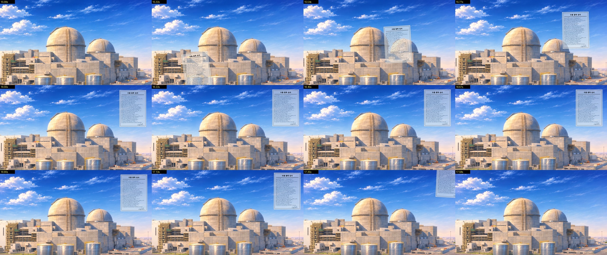

그림 01 · 2560×1440 · 20초 편 그림실제 사진
CUT 01 · 0.00–2.58s · 넓은 전망 · 봄 아침
국제핵안보교육훈련센터(INSA) 전경과 벚꽃
출처 · KINAC 20주년 기념 페이지 갤러리 사진(gallery-img19)
이용 조건 · 공공누리 제3유형(출처 표시 · 변경 금지) — 개작이라 KINAC 허락 필요
비고 · 20초 편의 그림 1 그대로.
실제 사진 열두 장에서 한 편까지
출처 · KINAC 20주년 기념 페이지 갤러리 사진(gallery-img19)
이용 조건 · 공공누리 제3유형(출처 표시 · 변경 금지) — 개작이라 KINAC 허락 필요
비고 · 20초 편의 그림 1 그대로.
출처 · KINAC 20주년 기념 페이지 갤러리 사진(gallery-img24)
이용 조건 · 공공누리 제3유형(출처 표시 · 변경 금지) — 개작이라 KINAC 허락 필요
비고 · 20초 편의 그림 2 그대로.
출처 · KINAC 웹진 2019년 3월호 「2019년 KINAC 규제 업무방향」의 청사 사진
이용 조건 · 공공누리 제3유형(출처 표시 · 변경 금지) — 개작이라 KINAC 허락 필요
비고 · 20초 편의 그림 3 그대로. 화암동 청사라는 식별은 주소에 따른 추정.
출처 · KINAC 웹진 2017년 2월호 마이크로 X선 형광분석기(MMXRF) 기사의 「분석을 위해 시료를 장비에 장착하고 있는 모습」
이용 조건 · 공공누리 제3유형(출처 표시 · 변경 금지) — 개작이라 KINAC 허락 필요
비고 · 요청자 선택(분석-D). 장비는 TIMS·SEM 이 아니라 MMXRF(비파괴분석 선별 장비). 얼굴은 참조 사진에서 흐린 뒤 닮지 않은 일반 인물로 그렸고, 글자는 소매의 「KINAC」 표지만 그림(장비 명판·안내문·가슴 자수는 그리지 않음).
출처 · KINAC 웹진 78호(2021년 9월)의 「물리적방호 태세를 점검하고 있는 KINAC」 사진
이용 조건 · 공공누리 제3유형(출처 표시 · 변경 금지) — 개작이라 KINAC 허락 필요
비고 · 촬영 장소는 기사에 적혀 있지 않음. 실제 시설의 감시 카메라·감지기·울타리가 보이므로 대외 사용 전 보안 검토 필요. 사람들의 얼굴은 이목구비 없는 면으로, 안전모·조끼의 로고는 그리지 않음.
출처 · KINAC 웹진 2020년 11월호의 「KINAC은 검사를 통해 원전의 사이버보안 현황을 확인한다」 사진
이용 조건 · 공공누리 제3유형(출처 표시 · 변경 금지) — 개작이라 KINAC 허락 필요
비고 · 검사원은 얼굴이 보이지 않는 옆 뒷모습으로 그림. 표시창 숫자·라벨·점검표 글자는 그리지 않음.
출처 · Wikimedia Commons 「Barakah nuclear power plant.jpg」 · Wikiemirati · 2017-05-17
이용 조건 · CC BY-SA 4.0(출처 표시 · 동일조건변경허락 — 이 그림에도 같은 조건이 따라옴)
비고 · 수출 심사 문서(가상 이미지)는 그림에 넣지 않고 편집 단계에서 영상 위에 얹음: 왼쪽 아래에서 올라와 제자리에 멈췄다가 오른쪽 위로 사라짐(요청자 지시). 문서의 글자는 제목 「수출 품목 심사」뿐이고 나머지는 흘림 글씨 모양.
출처 · KINAC 뉴스레터 2018년 3월호 「INSA 국제교육, 원자력의 평화적 이용을 위한 허브로 발돋움」 기사 사진
이용 조건 · 공공누리 제3유형(출처 표시 · 변경 금지) — 개작이라 KINAC 허락 필요
비고 · 20초 편의 그림 5 그대로.
출처 · KINAC 웹진 2020년 9월호의 「실린더를 검증하고 있는 IAEA 사찰관과 KINAC 검사원」 사진
이용 조건 · 공공누리 제3유형(출처 표시 · 변경 금지) — 개작이라 KINAC 허락 필요
비고 · 사진에는 휴대용 계측기(HM-5)가 보이지 않아, IAEA Imagebank 의 HM-5 사진(CC BY 2.0)을 모양 참조로 넣어 검사원 손에 계측기를 든 모습으로 그림 — 사진에 없던 것을 더한 부분. 실린더 라벨·벽 표지의 글자는 그리지 않고, 얼굴은 이목구비 없는 면으로 그림.
출처 · IAEA Imagebank(Flickr) 「IAEA Seals (03210012)」 · Dean Calma / IAEA · 2005-01-18
이용 조건 · CC BY-SA 2.0(동일조건변경허락 — 이 그림에도 같은 조건이 따라옴)
비고 · 20초 편의 그림 6 그대로.
출처 · KINAC 20주년 기념 페이지 갤러리 사진(gallery-img3)
이용 조건 · 공공누리 제3유형(출처 표시 · 변경 금지) — 개작이라 KINAC 허락 필요
비고 · 20초 편의 그림 7 그대로.
출처 · KINAC 보도자료(2025-11-14) 첨부 「(사진)한국원자력통제기술원 전경.jpg」
이용 조건 · 공공누리 제3유형(출처 표시 · 변경 금지) — 개작이라 KINAC 허락 필요
비고 · 20초 편의 그림 8 그대로(3840×2160).
